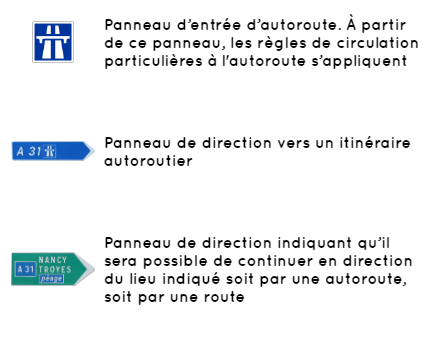
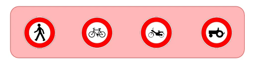
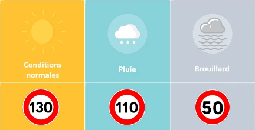

Les panneaux autoroutiers se caractérisent par la couleur bleue. Voici les panneaux faisant référence à une autoroute :
L’accès est interdit sur autoroute aux usagers ayant une vitesse trop faible :
La position du véhicule sur autoroute suit les mêmes règles que sur route : on roule sur la voie la plus à droite
La vitesse sur autoroute étant très rapide, certaines manœuvres sont strictement interdites :
Les limitations de vitesse sur autoroute sont les suivantes :
Une règle primordiale sur la distance de sécurité à connaître absolument : sur autoroute à 130 km/h, je dois laisser une longueur de 2 traits de bande d’arrêt d’urgence avec le véhicule qui me précède
● La fatigue
La fatigue est un des facteurs importants de la mortalité sur autoroute. L’endormissement peut
être dû à la monotonie de la circulation, ou bien au contraire, à une fatigue engendrée par une
vigilance accrue.
Pour éviter un endormissement au volant, il faut s’arrêter au moins 15 minutes toutes les 2 heures
de conduite.
Un message bien connu sur autoroute est : “Toutes les 2 heures, la pause s’impose”
● La panne
En cas de panne ou de malaise, il faut :
Bon courage pour votre code !